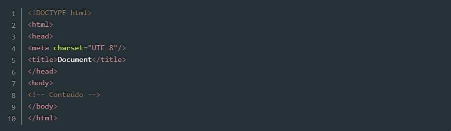

Estrutura básica de uma página HTML
A estrutura básica de uma página HTML pode ser vista na Listagem 1, na qual podemos ver as principais tags que são necessárias para que o documento seja corretamente interpretado pelos browsers.
Listagem 1:

Linha 1: a instrução DOCTYPE deve ser sempre a primeira a aparecer em uma página HTML para indicar ao browser qual versão da linguagem usada. Nesse caso, estamos trabalhando com a HTML5, versão na qual a declaração do DOCTYPE é bastante simples, como podemos ver na listagem;
Linhas 2 e 10: abertura e fechamento da tag html, que delimita o documento. Sendo assim, todas as demais tags da página devem estar nesse espaço;
Linhas 3 e 6: abertura e fechamento da tag head, que define o cabeçalho do documento. O conteúdo nesse espaço não é visível no browser, mas contém instruções sobre seu conteúdo e comportamento. Dentro dessa tag, por exemplo, podem ser inseridas folhas de estilo e scripts;
Linha 4: a tag meta, nesse caso, especifica qual conjunto de caracteres (character set ou charset) será usado para renderizar o texto da página. O UTF-8 contém todos os caracteres dos padrões Unicode e ASCII, sendo, portanto, o mais utilizado em páginas web. A mesma tag meta, porém com outros atributos, pode ser utilizada para outros fins, como na SEO (Search Engine Optimization);
Linha 5: a tag title define o título da página, aquele que aparece na janela/aba do navegador;
Linhas 7 e 9: abertura e fechamento da tag body, marcando o espaço no qual deve estar contido o conteúdo visual da página. As demais tags que representam texto, botões etc. devem ser adicionadas nesse intervalo;
Linha 8: nessa linha podemos observar a sintaxe para adição de comentários em HTML. Esse trecho não é renderizado pelo browser.
Para desenvolver páginas com HTML basicamente precisamos de um editor de texto, como o Bloco de Notas do Windows, Nano e Emacs no Linux, entre vários outros. Há, ainda, editores com opções avançadas, como recursos de syntax hilghligt e autocomplete, como Sublime Text, Atom, Brackets e Visual Studio Code, que podem ser usados para editar documentos HTML.
Independentemente do editor utilizado, podemos simplesmente copiar o código da Listagem 1 para um deles e salvar o arquivo com extensão .html. Em seguida, podemos abrir esse arquivo em um browser.
Tags do HTML
Um documento HTML é composto por tags, as quais possuem um nome e aparecem entre os sinais < e >, como vimos na Listagem 1, por exemplo, em e
. Naquele exemplo também vimos que algumas tags precisam ser abertas e fechadas, como em . Nesse caso, a tag de fechamento deve conter a barra / antes do nome. Outras, porém, não precisam ser fechadas, como a tag . Nesses casos, a adição da barra / no final da própria tag, como vemos na Linha 4 da Listagem 1 é opcional.
TIRAR DÚVIDA
ANOTAÇÕES
FAVORITAR
CONCLUÍDO
471GOSTEI
471
Por que eu devo ler este artigo:HTML (abreviação de Hypertext Markup Language) é uma linguagem de marcação utilizada na estruturação de páginas web. Sua sintaxe é bastante simples e, assim como a XML é baseada em tags, que representam os diversos elementos de uma página, como imagens e links.
Tire sua dúvida
Marcar como concluído
Anotar
Código fonte
Artigos
HTML e CSS
HTML básico - códigos HTML
Ao acessar uma página web através de um navegador, ele é capaz de interpretar o código HTML e renderizá-lo de forma compreensível para o usuário final, exibindo textos, botões etc. com as configurações definidas por meio das diversas tags que essa linguagem dispõe.
Atualmente a HTML encontra-se na versão 5 e é padronizada pelo W3C (World Wide Web Consortium), uma organização internacional responsável por estabelecer padrões para a internet, como a linguagem XML, CSS e o SOAP.
Estrutura básica de uma página HTML
A estrutura básica de uma página HTML pode ser vista na Listagem 1, na qual podemos ver as principais tags que são necessárias para que o documento seja corretamente interpretado pelos browsers.
Document
Listagem 1. Estrutura básica de uma página HTML
Linha 1: a instrução DOCTYPE deve ser sempre a primeira a aparecer em uma página HTML para indicar ao browser qual versão da linguagem usada. Nesse caso, estamos trabalhando com a HTML5, versão na qual a declaração do DOCTYPE é bastante simples, como podemos ver na listagem;
Linhas 2 e 10: abertura e fechamento da tag html, que delimita o documento. Sendo assim, todas as demais tags da página devem estar nesse espaço;
Linhas 3 e 6: abertura e fechamento da tag head, que define o cabeçalho do documento. O conteúdo nesse espaço não é visível no browser, mas contém instruções sobre seu conteúdo e comportamento. Dentro dessa tag, por exemplo, podem ser inseridas folhas de estilo e scripts;
Linha 4: a tag meta, nesse caso, especifica qual conjunto de caracteres (character set ou charset) será usado para renderizar o texto da página. O UTF-8 contém todos os caracteres dos padrões Unicode e ASCII, sendo, portanto, o mais utilizado em páginas web. A mesma tag meta, porém com outros atributos, pode ser utilizada para outros fins, como na SEO (Search Engine Optimization);
Linha 5: a tag title define o título da página, aquele que aparece na janela/aba do navegador;
Linhas 7 e 9: abertura e fechamento da tag body, marcando o espaço no qual deve estar contido o conteúdo visual da página. As demais tags que representam texto, botões etc. devem ser adicionadas nesse intervalo;
Linha 8: nessa linha podemos observar a sintaxe para adição de comentários em HTML. Esse trecho não é renderizado pelo browser.
Para desenvolver páginas com HTML basicamente precisamos de um editor de texto, como o Bloco de Notas do Windows, Nano e Emacs no Linux, entre vários outros. Há, ainda, editores com opções avançadas, como recursos de syntax hilghligt e autocomplete, como Sublime Text, Atom, Brackets e Visual Studio Code, que podem ser usados para editar documentos HTML.
Independentemente do editor utilizado, podemos simplesmente copiar o código da Listagem 1 para um deles e salvar o arquivo com extensão .html. Em seguida, podemos abrir esse arquivo em um browser.
Tags do HTML
Um documento HTML é composto por tags, as quais possuem um nome e aparecem entre os sinais < e >, como vimos na Listagem 1, por exemplo, em e
. Naquele exemplo também vimos que algumas tags precisam ser abertas e fechadas, como em . Nesse caso, a tag de fechamento deve conter a barra / antes do nome. Outras, porém, não precisam ser fechadas, como a tag . Nesses casos, a adição da barra / no final da própria tag, como vemos na Linha 4 da Listagem 1 é opcional.
Outro aspecto importante da linguagem é que ela é case insensitive, ou seja, não leva em consideração a diferença entre letras maiúsculas e minúsculas. No entanto, o uso apenas de letras minúsculas tem sido utilizado como padrão pelos desenvolvedores.
Além dessas características, as tags também possuem atributos, como vemos na Linha 4 da Listagem 1, na qual a tag meta possui o atributo charset=”UTF-8”. Essas propriedades definem algumas características adicionais de cada tag e em alguns casos são obrigatórias. Seus valores devem aparecer entre aspas duplas, como no exemplo acima, ou em aspas simples, caso o próprio valor contenha aspas duplas.